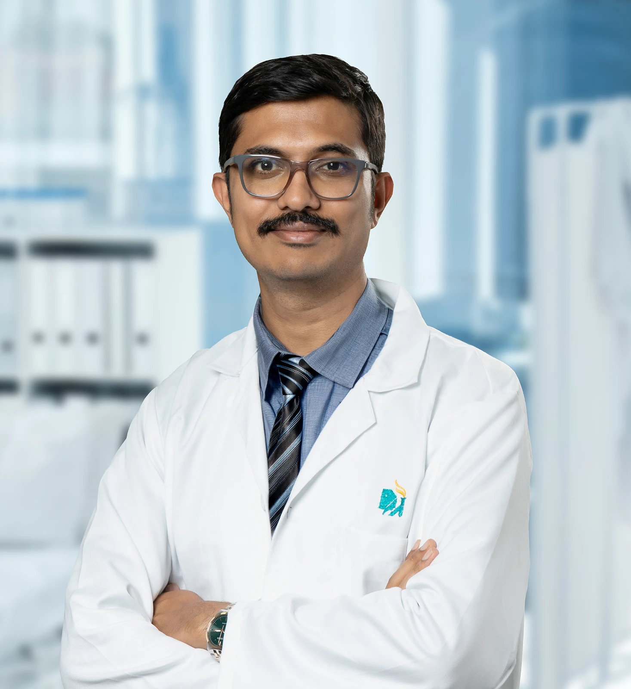

10treatments
Brain
Tumours, trauma, epilepsy and movement disorders of the brain.
- Brain Tumor Surgery
- Endoscopic Brain & Spine Surgery
- Neuro Trauma
- Epilepsy Surgery
Dr Sachin G R is a PGIMER Chandigarh–trained neurosurgeon with fellowships in Japan and South Korea. He specialises in minimally invasive brain and spine surgery.

Senior Neurosurgeon · Brain & Spine Surgery
Dr Sachin G R is a renowned senior neurosurgeon trained at PGIMER Chandigarh, with more than 15 years of experience operating on the brain and spine. He has skull base fellowship training from Osaka, Japan, and paediatric neurosurgery training from SickKids, Toronto. His special interest is the spine, and he specialises in minimally invasive spine surgery.
Six areas of expertise, one surgeon who looks after you from the first scan to full recovery.
Tumours, trauma, epilepsy and movement disorders of the brain.
Deep-seated lesions at the base of the skull, reached through minimal corridors.
Stroke, aneurysms and abnormal blood vessels of the brain.
Neck and back conditions, from keyhole endoscopy to complex reconstruction.
Peripheral nerve injuries, entrapments and chronic pain.
Brain and spine care for infants, children and teenagers.
Techniques learned at leading centres in Japan, South Korea and Canada, used to make every operation smaller, safer and faster to recover from.
GPS-like guidance that maps the safest route to a tumour on your own MRI, in real time.
Magnified, brightly lit views to separate tumour from healthy brain and nerves.
A slim camera reaches deep areas through the nose or tiny openings, without large cuts.
Nerve signals are watched throughout surgery to protect movement, speech and feeling.
Disc and nerve surgery through 8–20 mm openings, often as a day procedure.
For tumours near speech or movement areas, you help the surgeon protect them in real time.
Neurosurgery is life-changing. Choosing the right surgeon matters as much as the right operation.
Surgery only when it truly helps. When it does, the gentlest operation that fully solves the problem, with every step explained.
Keyhole, tubular and full-endoscopic techniques mean smaller cuts, less pain and faster recovery, used whenever they can treat the problem fully.
MCh at PGIMER Chandigarh, skull base fellowship in Osaka, endoscopic spine fellowship in South Korea and paediatric neurosurgery at SickKids, Toronto.
Many patients leave without needing surgery. When an operation is right, you will understand exactly why, what it involves and what to expect.
Neuronavigation, high-definition endoscopes, the operating microscope and intra-operative nerve monitoring protect the areas that matter.
Clear recovery plans, rehabilitation guidance and direct follow-up, so you and your family are never left guessing.
A clear path, explained at every step, so you always know what comes next.
Detailed history, examination and a calm conversation about your symptoms.
MRI, CT and nerve studies reviewed in depth, with a second opinion if you need one.
Non-surgical options first. If surgery helps, the least invasive route is chosen.
Precision surgery with navigation, microscope or endoscope and nerve monitoring.
Early walking, a rehab plan and follow-up until you are back to your life.
Many patients are advised surgery that they may not need. Share your reports and Dr Sachin will review them personally.
“I had been living with sciatica for months. After endoscopic surgery I walked the same evening and went home the next day. Dr Sachin explained everything patiently.”
“Our son needed surgery for hydrocephalus. Dr Sachin was gentle with him and honest with us. He is now back at school and doing wonderfully.”
“The tumour was removed through the nose with no scar. My vision improved within days. I am grateful for the care and clarity at every step.”
“I was told I needed spinal fusion. Dr Sachin reviewed my MRI and advised physiotherapy first. Six months later I am pain-free without an operation.”
“From the first consultation to recovery, the team made a frightening situation feel manageable. The surgery went smoothly and I recovered faster than expected.”
Can't find your answer? Call or WhatsApp and we will help.
No. Most back and neck problems, and many brain conditions, are managed with medicines, physiotherapy or observation. Dr Sachin recommends surgery only when it clearly offers a better outcome than the alternatives.
It is surgery done through small incisions using tubes or a camera, moving muscles aside rather than cutting them. Patients usually have less pain, smaller scars and go home sooner, often within a day.
Most patients stand and walk within a few hours to a day. Desk work usually resumes in 1–4 weeks depending on the procedure.
Yes. You can share your MRI or CT reports and images on WhatsApp before visiting. Dr Sachin will advise whether an in-person consultation is needed.
Modern neurosurgery uses neuronavigation, the operating microscope, endoscopes and nerve monitoring to make operations far safer than before. Your specific risks and benefits are discussed in detail before any decision.
Yes. Dr Sachin trained in paediatric neurosurgery at SickKids, Toronto, and treats hydrocephalus, spina bifida, craniosynostosis and brain tumours in children.
It depends on the procedure. Endoscopic spine surgery is often a day-care or overnight stay, spine fusion usually 3–5 days, and brain surgery typically 4–7 days.
Yes, when carefully planned. Minimally invasive and endoscopic techniques cause less blood loss and pain, which makes them well suited to older patients and those with other health conditions.
It uses a thin camera passed through the nose or a small opening to reach deep areas such as the pituitary gland and skull base, avoiding large incisions and visible scars.
Bring all scans (films or CDs), reports, a list of your medicines and any previous surgery records. A family member is welcome to join you.
Share your MRI or CT reports and get a clear, honest opinion on whether you need surgery, and if you do, the least invasive way to do it.